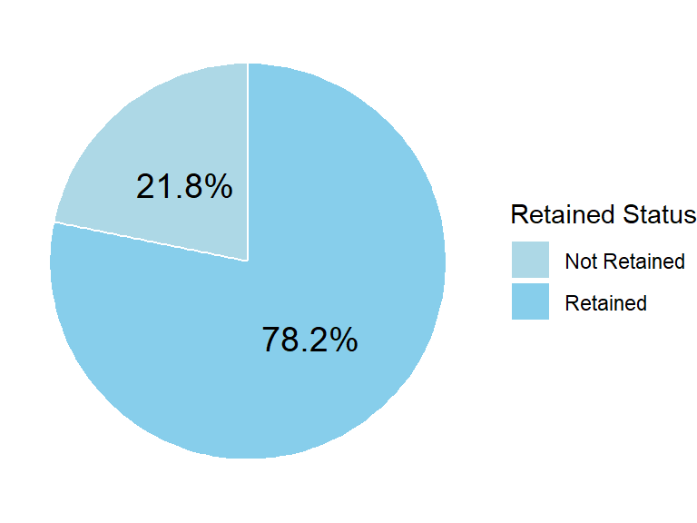
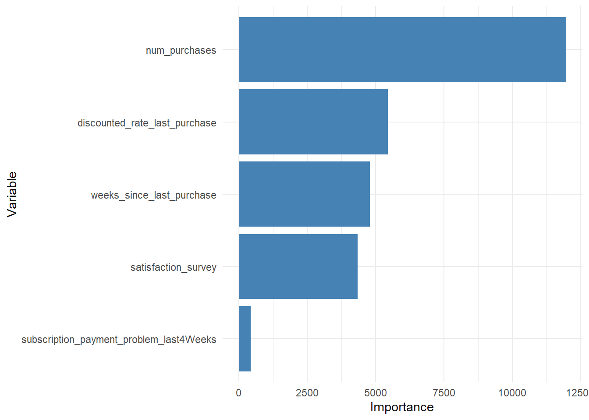
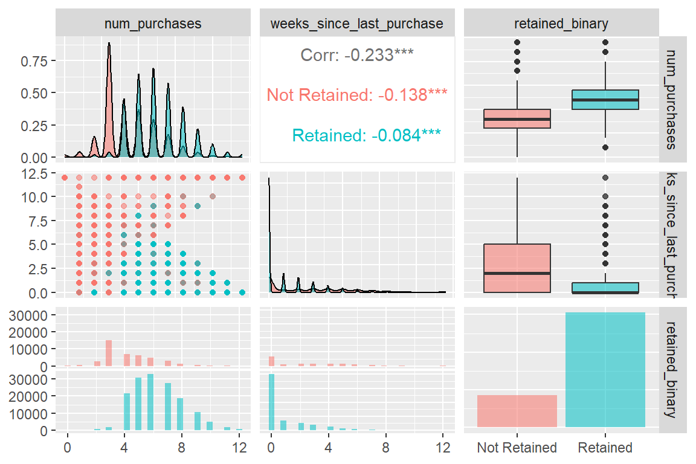
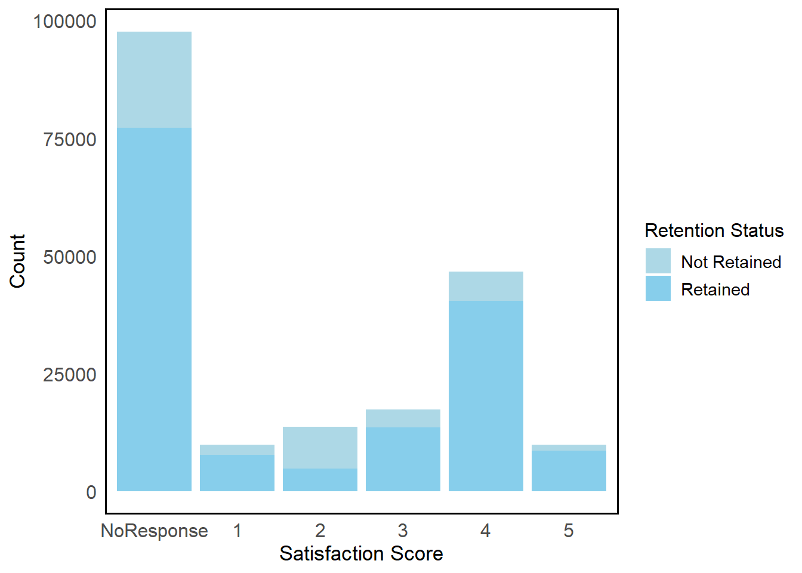
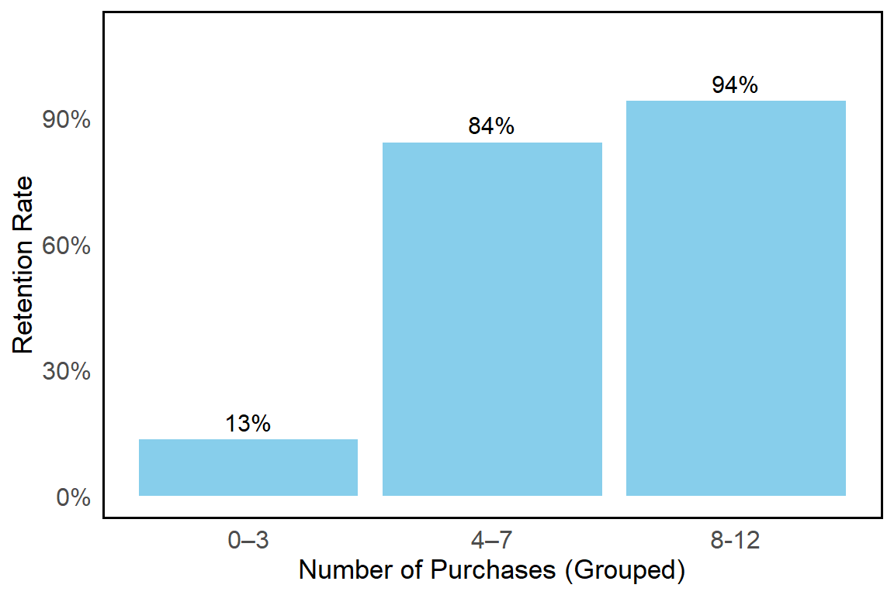
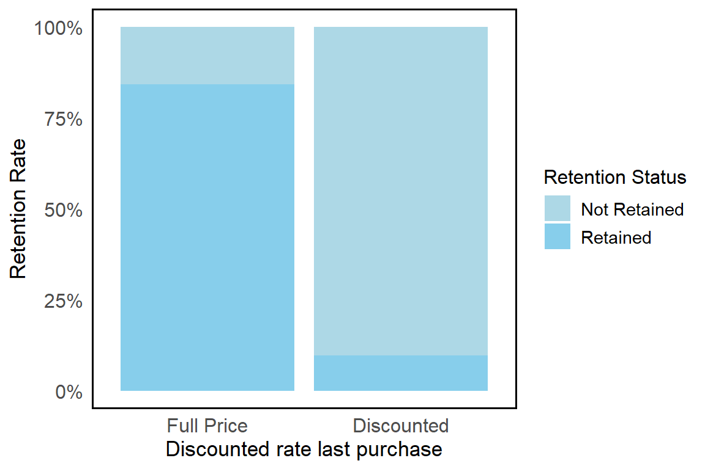
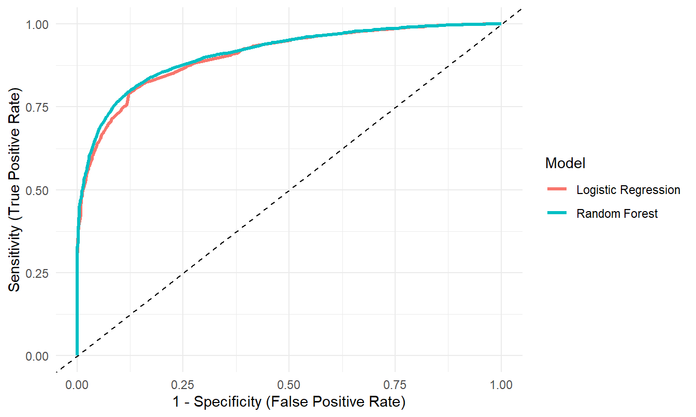

Predicting Customer Retention at PlatefulNZ
1 Introduction
PlatefulNZ, a meal kit company that offers locally sourced recipes in New Zealand, is concerned about its current business performance and customer churn factors. This report aims to analyze key attributes of PlatefulNZ’s customers to identify customer retention and churn drivers.
2 Dataset Overview
The dataset used in this analysis combines transactional, subscription, and engagement records from PlatefulNZ’s customer database for the 90 days between April and June. It includes 200,000 observations and key variables relevant to retention, such as num_purchases (total purchases in the period), weeks_since_last_purchase (recency measure), satisfaction_survey (ordinal rating from 1–5), and discounted_rate_last_purchase (binary indicator of whether the last purchase accepted a discount). The target variable, retained_binary, classifies customers as retained (1) or not retained (0). The dataset was cleaned to enable accurate visualization and modelling by removing duplicates, checking for missing values, recording categorical variables, and verifying numeric values.
3 Exploratory data analysis
Figure 1 presents the overall retention distribution, revealing that 78.2% of customers were retained during the 90-day observation period, while 21.8% churned, highlighting that nearly one in five customers disengage within a short period. The outcome concluded 10 important variables using the random rule, highlighting purchasing frequency, discount rate of last purchase, satisfaction scores, and weeks since previous purchase, as shown in Figure 2. A matrix was made to examine the correlation between numeric variables, which include num_purchases and weeks_since_last_purchase, and the status of customer retention. The box plots indicate that retained customers have a higher median purchase count and fewer weeks since their last purchase. It is worth mentioning that there is a correlation of -0.233 between weeks_since_last_purchase and retention, but this may underestimate the relationship. In contrast, Table 1 illustrates a more precise correlation of 0.356 based on the entire dataset, better reflecting the overall trend.
Figure 1
Retention Rate Distribution
Figure 2
Top 10 Important Variables

Figure 3
Relationships Between Purchase Behavior and Customer Retention

Moreover, Table 1 displays that the correlation coefficient between num_purchases and retention rate is -0.422, a moderate positive correlation. The result further supports the opinion that frequent purchases could improve retention. These last two variables are statistically significant (p < 0.001) with customer retention, reinforcing the importance of customer experience.
Table 1
Summary of Variable Association with Retention
| Variable | Type | Correlation (r) | p-value | Interpretation |
|---|---|---|---|---|
| num_purchases | Numeric | -0.422 | < 0.001 | Moderate positive correlation |
| weeks_since_last_purchase | Numeric | 0.356 | < 0.001 | Weak negative correlation |
| discounted_rate_last_purchase | Binary | – | < 0.001 | Strong significant association |
| satisfaction_survey | Ordinal | – | < 0.001 | Strong significant association |
Figure 4 presents satisfaction distribution by retention status, indicating that customers with moderate to high satisfaction scores (3–5) are more likely to remain subscribed. Figure 5 highlights a sharp drop in retention after five weeks of inactivity, with rates approaching zero by week nine.
Figure 4
Satisfaction vs Retention

Figure 5
Retention Rate by Purchase Week

Figure 6 shows retention by purchase frequency group, with the highest rates among customers making 8–12 purchases, suggesting that increasing purchase frequency could substantially improve retention. The retention rates for customers whose last purchase was discounted versus full price reveal a markedly lower retention rate for the discounted group, as shown in Figure 7. This likely reflects discounts as an attempt for customers already at high churn risk, rather than as a long-term loyalty driver.
Figure 6
Retention Rate by Purchase Frequency Group

Figure 7
Retention Rate by discounted rate last purchase

Insights from this exploratory analysis directly informed the selection of factors for the predictive model, focusing on purchase behaviour, satisfaction, and operational reliability as key drivers of customer retention.
4 Modelling
4.1 Assumptions
For Logistic Regression:
Each predictor has a linear relationship with the log-odds of retention.
Predictors are independent and have no multicollinearity (VIF < 5).
For Random Forest:
- No assumptions on linearity or distribution, but predictors are relevant and informative.
4.2 Methods
To compare model performance, we applied stratified K-fold cross-validation with K = 5, implemented using the vfold_cv() function from the tidymodels framework. The training dataset was partitioned into five equally sized folds while preserving the proportion of retained and not retained customers in each fold. In each iteration, four folds were used for model training and the remaining fold was used for validation. This procedure was repeated five times so that each fold served as the validation set once. Model performance was then evaluated by averaging the results across all folds, which helps reduce variability and bias associated with a single train–test split.
The same predictors were used for both models: num_purchases, weeks_since_last_purchase, satisfaction_survey, and discounted_rate_last_purchase(see Figure 2). Multicollinearity was checked using the Variance Inflation Factor (VIF), and all predictors had VIF < 5, indicating no multicollinearity(see Table 2). After running both models, Random Forest slightly outperformed Logistic Regression due to its higher predictive Accuracy while maintaining good recall and specificity.
Table 2
Summary statistics of VIF values
| Metric | Value | Interpretation |
|---|---|---|
| VIF (num_purchases) | 1.046 | < 5: No multicollinearity issue |
| VIF (weeks_since_last_purchase) | 1.021 | < 5: No multicollinearity issue |
| VIF (satisfaction_survey) | 1.150 | < 5: No multicollinearity issue |
| VIF (discounted_rate_last_purchase) | 1.067 | < 5: No multicollinearity issue |
4.3 Key Findings
Table 3 summarises the classification evaluation metrics assessing the model’s performance on the test set. The model achieves an accuracy of 0.862, indicating that 86.2% of customer outcomes are correctly classified, suggesting a strong overall predictive capability.
Using customer churn (Not Retained) as the positive class, the model attains a recall of 0.794, meaning that nearly 80% of customers who eventually churn are successfully identified in advance. This is particularly valuable from a business perspective, as it enables PlatefulNZ to proactively target at-risk customers with retention strategies before churn occurs. At the same time, the specificity of 0.880 demonstrates that the model maintains high accuracy in correctly recognising retained customers, reducing the risk of unnecessary interventions.
As illustrated in Figure 8, the ROC curve provides a clear visual assessment of the model’s ability to distinguish between retained and non-retained customers. The AUC score of 0.911 (see Table 3) further confirms strong discriminatory power, indicating that the model is highly effective in prioritising customers by churn risk for managerial decision-making.
Table 3
Test Set Performance Comparison
| Model | Accuracy | Recall (Churn) | Specificity | AUC |
|---|---|---|---|---|
| Logistic Regression | 0.857 | 0.793 | 0.875 | 0.905 |
| Random Forest | 0.862 | 0.794 | 0.880 | 0.911 |
Figure 8
ROC Curve - Predicting Customer Churn (Not Retained)

Although Random Forest achieved slightly higher AUC and accuracy on the test set, the improvement over Logistic Regression was marginal. Given the comparable predictive performance and the superior interpretability of Logistic Regression, the logistic model was selected as the primary model for managerial insights.
The analysis identified several key drivers of customer retention (see Table 4). Customers with higher purchase frequency were 1.73 times more likely to remain subscribed for each additional purchase, highlighting the importance of encouraging repeat purchasing behaviour. In contrast, each additional week since the last purchase reduced retention odds by approximately 36%, indicating that customer inactivity is a strong early signal of churn risk.
Customer satisfaction also emerged as a critical factor. While low and medium satisfaction levels showed limited impact, highly satisfied customers (scores 4–5) demonstrated substantially stronger retention outcomes, with retention odds up to four times higher than the baseline group. This suggests that service quality improvements are most effective when they elevate customers into the high-satisfaction range, rather than marginally improving already dissatisfied experiences.
Finally, customers who received a discount on their last purchase exhibited significantly lower retention odds, with odds falling to approximately 3% of those who paid full price. This indicates that discounting may often be reactive—targeting customers already at high risk of churn—rather than a reliable long-term retention strategy. Overall, the results suggest that sustainable retention is more effectively driven by consistent engagement and satisfaction, rather than short-term price incentives.
Table 4
Logistic Regression Odds Ratios (with explicit baseline
| Variable | Odds Ratio | 95% CI | Interpretation |
|---|---|---|---|
| Satisfaction: No response (Baseline) | 1.000 | Reference | Baseline group |
| Number of purchases | 1.726 | (1.706, 1.746) | Increases retention odds |
| Weeks since last purchase | 0.636 | (0.631, 0.642) | Decreases retention odds |
| Satisfaction: Very low (1) | 1.002 | (0.929, 1.083) | Increases retention odds |
| Satisfaction: Low (2) | 0.050 | (0.047, 0.053) | Decreases retention odds |
| Satisfaction: Medium (3) | 0.982 | (0.926, 1.043) | Decreases retention odds |
| Satisfaction: High (4) | 2.984 | (2.838, 3.138) | Increases retention odds |
| Satisfaction: Very high (5) | 3.998 | (3.615, 4.428) | Increases retention odds |
| Discounted last purchase (vs Full Price) | 0.027 | (0.025, 0.029) | Decreases retention odds |
5 Conclusions and Recommendations
PlatefulNZ’s customer retention is primarily driven by purchase frequency, recent engagement, and customer satisfaction. The results indicate that customers who purchase more frequently have substantially higher retention odds, while extended periods of inactivity are strongly associated with increased churn risk. High satisfaction levels further amplify retention, reinforcing the importance of consistent service quality.
To improve long-term outcomes, PlatefulNZ should focus on initiatives that stimulate repeat purchasing, such as loyalty rewards tied to order frequency or subscription milestones. In addition, early re-engagement strategies—for example, targeted reminders or personalised offers triggered by prolonged inactivity—can help reduce churn risk before disengagement becomes permanent. Finally, investments in service quality improvements informed by customer feedback are likely to deliver greater long-term retention benefits than short-term price discounts. These strategies will help strengthen customer relationships, encourage ongoing engagement, and reduce churn.